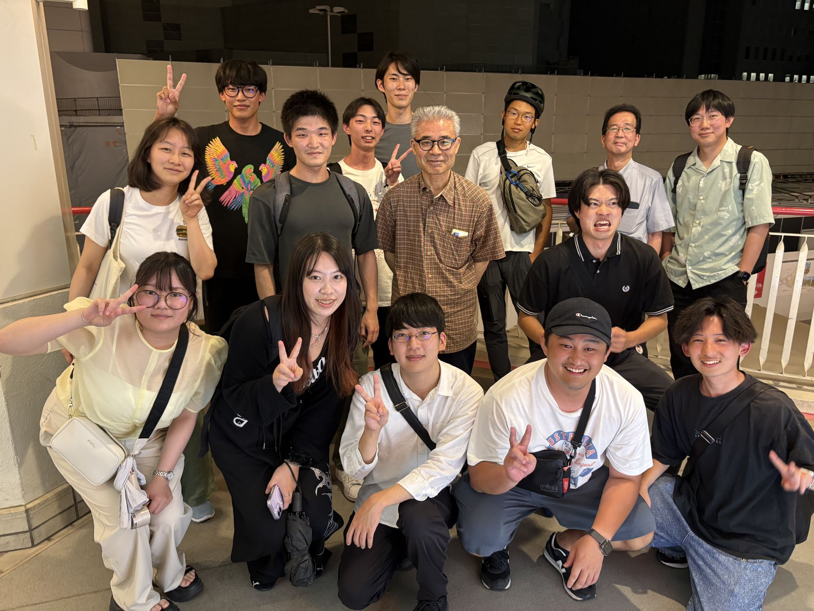
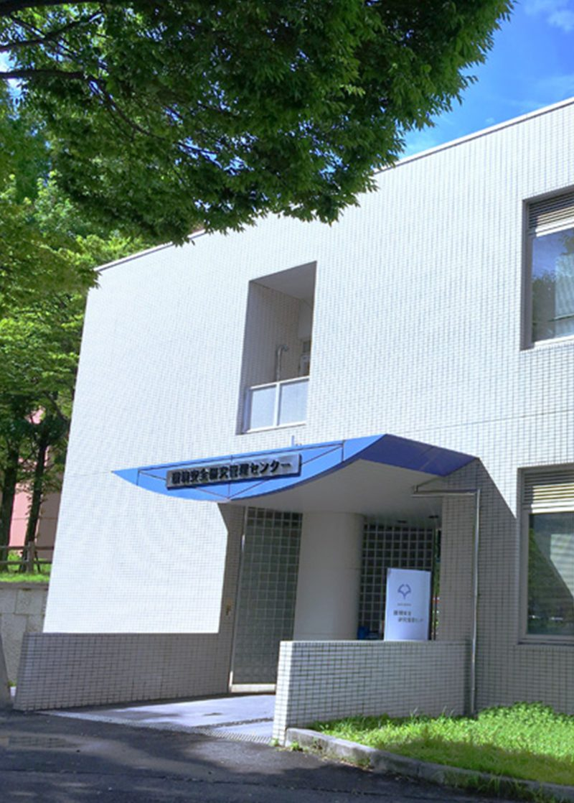

森研究室Mori Lab, The University of Osaka
Excited State Chirality
In our group, we focus on physical organic chemistry, conduct a wide range of research at the interface of light and molecules. This concept plays a crucial role in photoreactions and photophysics. It encompasses the control of asymmetric photoreactions through both conventional and emerging strategies, including supramolecular interactions. Additionally, it involves elucidating the structure-property relationships of circular dichroism and circularly polarized luminescence from a materials perspective. Achieving this requires highly accurate excited state computations regarding conformation, energy, dynamics, and property calculations, along with human (and sometimes unconventional) intuition. We also work on developing new functional organic molecules by weakly bonded electron pairs, such as those found in diradicals.

Newsニュース
すべて見る All newsAccessアクセス

大学院工学研究科 応用化学専攻 分子創成化学コース（協力講座）
環境化学講座 森研究室
〒565-0871 大阪府吹田市山田丘2-4
Research Center for Environmental Preservation, The University of Osaka
2-4 Yamadaoka, Suita, Osaka 565-0871, Japan